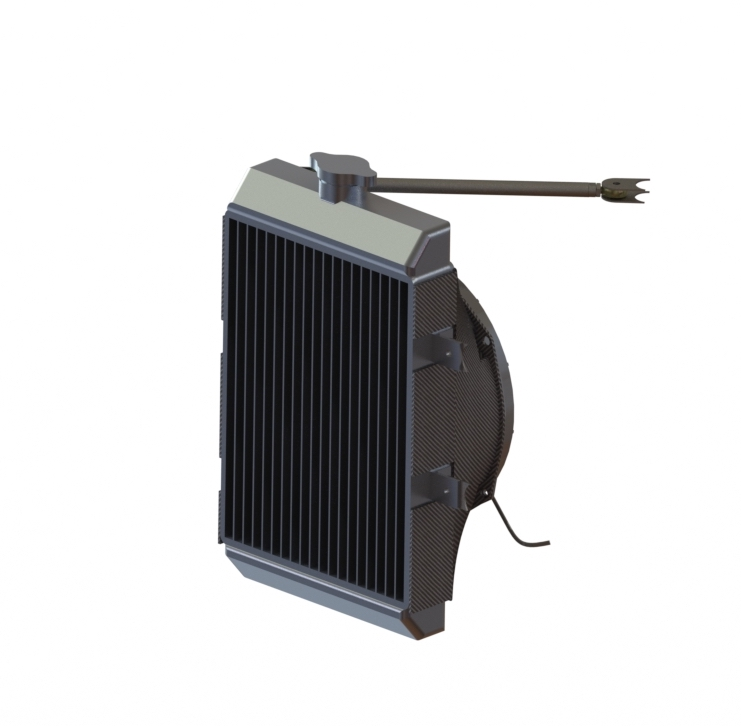
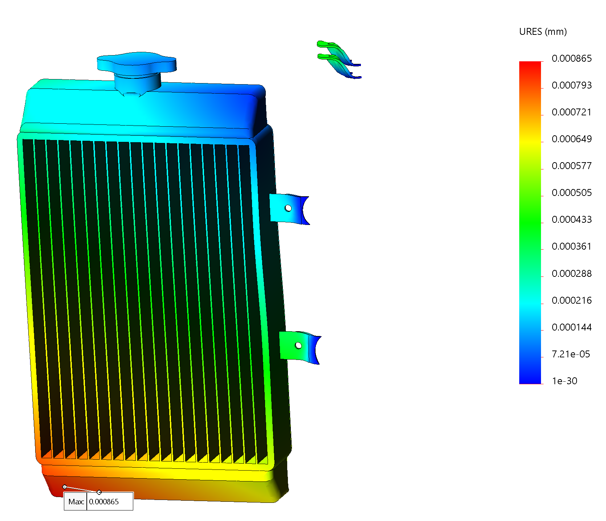
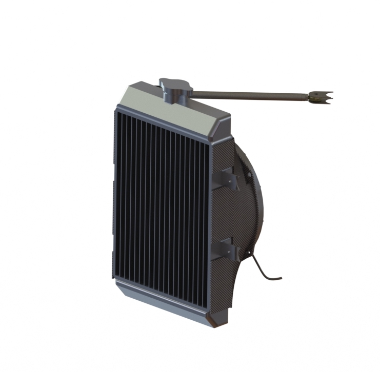
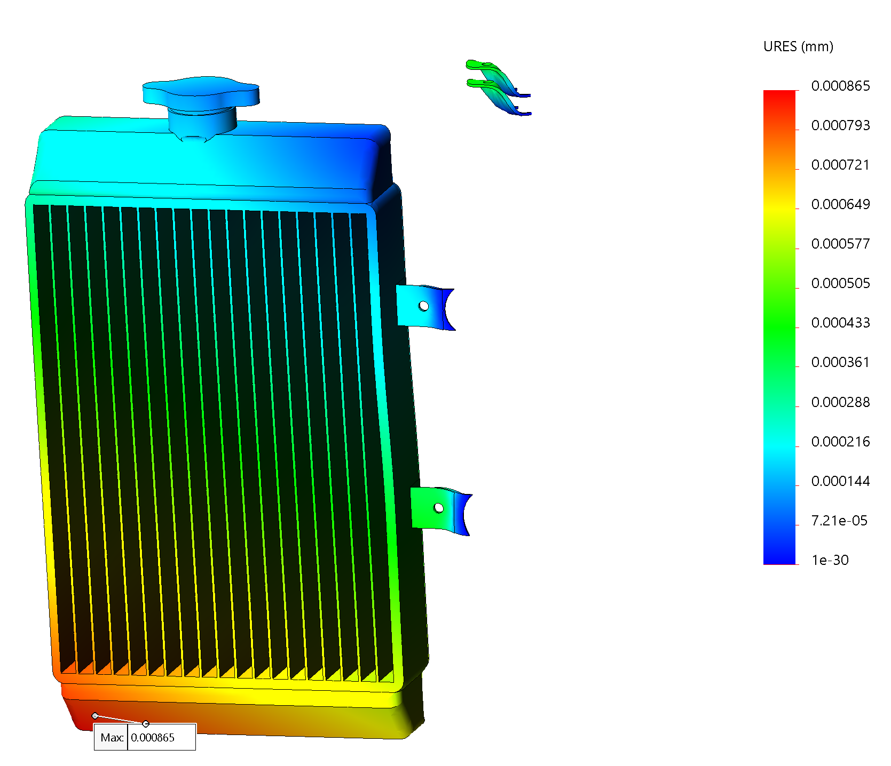

B20 Cooling System
For this project, I was responsible for designing the cooling system for the Berkeley Formula Racing 2020 car (B20).
I was challenged with selecting an appropriate radiator and designing and manufacturing mounting, ducting, and plumbing.

One of the biggest design changes for the 2020 car was our updated engine package, a KTM 450SXF.
With an extra 100cc of displacement and up to 20 more horsepower, I needed to meet a higher
significantly heat rejection rate than was achieved on B19.
Quantifying increased heat production in the 450 proved to be a challenge; basic heat convection
calculations pointed to a frontal surface area increase requirement of about 12%. Simple scaling calcs
(B20 horspower / B19 horsepower) pointed to an increase of 9%. After reading some literature from
other formula teams, I decided to go with a Mishimoto ATV radiator that had a frontal area increase of
roughly 10% over B19, with most other factors (number of coolant passes, fin density) kept the same.

With a radiator selected and a rough model inserted into Solidworks, I set about designing a
mounting system. I kept my first iterations roughly similar to B19, with easily manufacturable
aluminum tabs that bolted to corresponding steel tabs on the chassis. In order to (1) ensure compliance and (2)
compare stiffness to B19, I ran static FEA’s under worst-case loads: 1.5G acceleration, 2G cornering, and 3G bumps.
2019 Displacement:


I initially planned to go with three sets of tabs, two on the chassis, and one on the far side
of the radiator connected to the sidewing. Our aero team, however, decided not to run sidewings for
the 2020 car, so I came up with a new design using a rod to connect the outside edge of the radiator from
deflecting. FEA’s showed significant improvement, less than a millimeter of deflection.
2020 Displacement:

My initial design relied on a solid tube welded to the bottom edge of the radiator. After
consulting with my team lead, we decided to move the rod to the top of the radiator (allowing the
radiator to be lowered as much as possible) and swap it out for a more aesthetically pleasing, and
modular, tie rod.

Finally, I designed a fan shroud to be molded out of carbon fiber. I intend to consult some alumni as well
as run some CFD’s to validate the necessity of a shroud before manufacturing, as it could be counterproductive
to always channel air to a fan that isn’t always running.

In the spring semester, I intend to manufacture and assemble the radiator mounts and shroud.
For this project, I was responsible for designing the cooling system for the Berkeley Formula Racing 2020 car (B20). I was challenged with selecting an appropriate radiator and designing and manufacturing mounting, ducting, and plumbing.

One of the biggest design changes for the 2020 car was our updated engine package, a KTM 450SXF. With an extra 100cc of displacement and up to 20 more horsepower, I needed to meet a higher significantly heat rejection rate than was achieved on B19.
Quantifying increased heat production in the 450 proved to be a challenge; basic heat convection calculations pointed to a frontal surface area increase requirement of about 12%. Simple scaling calcs (B20 horspower / B19 horsepower) pointed to an increase of 9%. After reading some literature from other formula teams, I decided to go with a Mishimoto ATV radiator that had a frontal area increase of roughly 10% over B19, with most other factors (number of coolant passes, fin density) kept the same.
With a radiator selected and a rough model inserted into Solidworks, I set about designing a
mounting system. I kept my first iterations roughly similar to B19, with easily manufacturable
aluminum tabs that bolted to corresponding steel tabs on the chassis. In order to (1) ensure compliance and (2)
compare stiffness to B19, I ran static FEA’s under worst-case loads: 1.5G acceleration, 2G cornering, and 3G bumps.
2019 Displacement:
I initially planned to go with three sets of tabs, two on the chassis, and one on the far side of the radiator connected to the sidewing. Our aero team, however, decided not to run sidewings for the 2020 car, so I came up with a new design using a rod to connect the outside edge of the radiator from deflecting. FEA’s showed significant improvement, less than a millimeter of deflection.
2020 Displacement: 
My initial design relied on a solid tube welded to the bottom edge of the radiator. After consulting with my team lead, we decided to move the rod to the top of the radiator (allowing the radiator to be lowered as much as possible) and swap it out for a more aesthetically pleasing, and modular, tie rod.
Finally, I designed a fan shroud to be molded out of carbon fiber. I intend to consult some alumni as well as run some CFD’s to validate the necessity of a shroud before manufacturing, as it could be counterproductive to always channel air to a fan that isn’t always running.
In the spring semester, I intend to manufacture and assemble the radiator mounts and shroud.